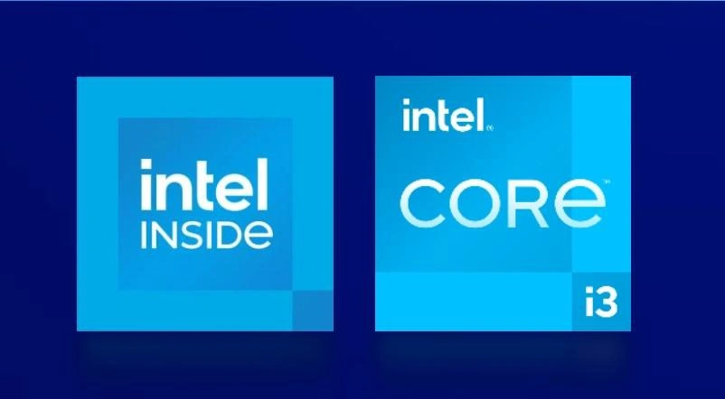

英特尔发布N系列处理器

英特尔在 2023 年 1 月 3 日正式发布了 N 系列处理器，面向入门级计算，包括 N50 到 N305，最高为 8 核 8 线程，32EU 核显规格。
据介绍，英特尔 N 系列处理器采用 Intel 7 制程工艺的全新 Gracemont CPU 微架构，拥有 4 至 8 个能效核的选项，提供卓越的每瓦性能。其中，酷睿 i3N 8 核心型号的整体应用程序系统性能提升高达 42%，Web 浏览性能提升高达 24% 。
N 系列处理器包括英特尔 N 和英特尔酷睿 N 两型号，前者 4 核，后者 8 核，支持 LPDDR5、DDR5、DDR4 内存以及 UFS 2.1 、eMMC 闪存以及 SSD。据介绍，该系列处理器支持 10bit HEVC 和 VP9 编码 / 解码，AV1 解码实现高色深 ；通过 HDMI 2.0b 接口在电视上播放 4K HDR 流视频，最多能够同时连接 3 台显示器。
英特尔表示，全新英特尔 ® 酷睿 TM i3 N 系列处理器扩大了产品选择 良好的发展态势，2023 年将有超过 50 个 OEM 设计。
英特尔处理器 N 系列特性
- 采用 Intel 7 制程工艺制造的全新能效核（微架构代号 Gracemont）。
- 与前一代相比，英特尔处理器将应用性能提升可高达 28%，图形性能提升可高达 64%。
- 与英特尔处理器相比，首次将全新英特尔酷睿 i3 N 系列处理器的应用性能再提升可高达 42%，图形性能再提升可高达 56%。
- 最长可达 10 小时的 HD 视频播放时长，无需再次充电。
- 全新的 AV1 解码、高分辨率显示引擎以及更好地支持 IPU 和 MIPI 摄像头。
- 超高速英特尔 Wi-Fi 6E（Gig+) 和 Bluetooth 5.2 增强了连接性。
- 拥有灵活的内存（LPDDR5、DDR5 / DDR4）和存储（UFS / SSD / eMMC）选项。
英特尔表示，这些处理器为教育用户和消费者量身定制，兼顾他们对性价比要求的同时，满足他们对出色性能、视频协作和生产力等领域的高质量体验需求。宏碁、戴尔、惠普、联想和华硕等生态合作伙伴预计将在 2023 年推出涵盖 ChromeOS 和 Windows 操作系统的 50 余款机型。
1 月 29 日，英特尔又在其网站更新了一款 N95 型号，其规格为 4 核 4 线程，睿频 3.4GHz，16EU 核显，15W TDP。
2 月 10 日，快科技:《Intel 纯小核 12 代酷睿首测》
摩方的 Morefine M9 就是首批采用 Intel N 系列平台的迷你机之一，体积只有 0.5 升。处理器型号为 N100，4 核心 4 线程，最高频率 3.4GHz，集成 24 单元核显，热设计功耗仅为 6W
CPU 性能测试对比的是 2021 年发布的赛扬 N5105，10nm 工艺，Jasper Lake 架构，4 核心 4 线程，最高频率 2.9GHz，24 单元核显，热设计功耗 10W
GeekBench 5 跑分单核性能提升了多达 63.5％，充分反映了新架构、高频率的威力，而在核心数相同的情况下，多核性能也提升了 28.0％
Intel 纯小核 12 代酷睿首测：功耗神奇！单通道内存要了亲命
遗憾的是，N 系列仅支持单通道内存，这不但会限制日常性能的发挥，更是成为核显性能的桎梏，基准跑分损失了 10％以上。
相关链接：淘宝 MOREFINE 摩方旗舰店(https://szaitao.taobao.com/)
以下是 IT 之家汇总的英特尔 N 系列处理器参数规格：
| 产品名称 | 内核数 | 核显 | 最大睿频 | TDP |
|---|---|---|---|---|
| i3-N305 | 8 核 8 线程 | 32EU | 3.8GHz | 15W |
| i3-N300 | 8 核 8 线程 | 32EU | 3.8GHz | 7W |
| N200 | 4 核 4 线程 | 32EU | 3.7GHz | 6W |
| N100 | 4 核 4 线程 | 24EU | 3.4GHz | 6W |
| N97 | 4 核 4 线程 | 24EU | 3.6GHz | 12W |
| N95 | 4 核 4 线程 | 16EU | 3.4GHz | 15W |
| N50 | 2 核 2 线程 | 16EU | 3.4GHz | 6W |
热门评论
- 所有的 NAS 一夜过时了
- 说实际点已经完爆 i7 4770 了
- 保守了，7700k 一样扑街
- 软路由神 U
- 最大受益者是工控机和软路由
- 软路由，NAS，2023 年标配